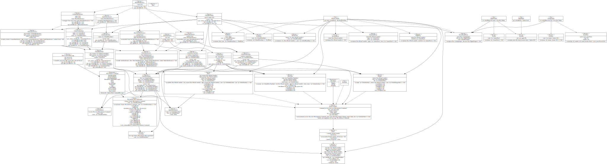

[−][src]Crate rmc_core

Modules
| comms | The comms module contains the code for running the HTTP server |
| control | The control module contains all code for the controlling logic of the physical robot. This includes managing subsystems like the drive train and MH. |
| devices | The devices module contains code for interfacing with various peripheral devices employed by the robot. This category includes sensors and motor controllers. |
| framework | The framework module contains traits and interfaces key to the entire system. It's purpose is not well defined, and we plan to phase this out at some point. |
| robot_map | The robot map is a file filled with key constants such as pin numbers and network ports that may change over time. It is used to make reconfiguring pinouts a simpler process. |
| run_modes | The run_modes module contains various modes for running the robot.
Most of the modes are for test purposes only.
Modes are meant to be switched out by altering the code in |
Macros
| rocket_uri_macro_files | Rocket code generated wrapping URI macro. |
| rocket_uri_macro_handle_brake | Rocket code generated wrapping URI macro. |
| rocket_uri_macro_handle_disable_drive | Rocket code generated wrapping URI macro. |
| rocket_uri_macro_handle_drive | Rocket code generated wrapping URI macro. |
| rocket_uri_macro_handle_enable_drive | Rocket code generated wrapping URI macro. |
| rocket_uri_macro_handle_kill | Rocket code generated wrapping URI macro. |
| rocket_uri_macro_handle_revive | Rocket code generated wrapping URI macro. |
| rocket_uri_macro_index | Rocket code generated wrapping URI macro. |
Functions
| main |